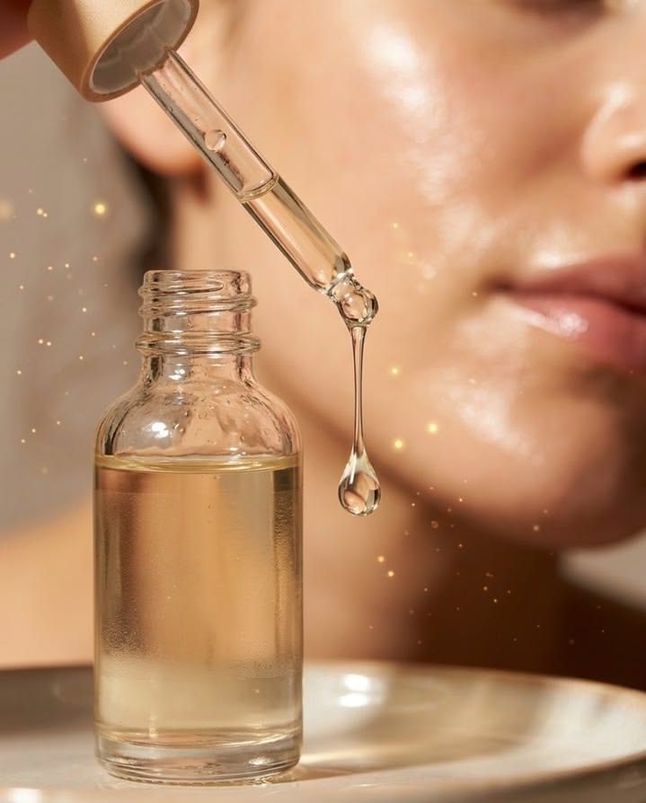

01
Limpeza
Remove impurezas, oleosidade e resíduos acumulados na pele ao longo do dia.
O skincare é uma rotina de cuidados com a pele que ajuda a mantê-la limpa, hidratada e protegida. Não é necessário utilizar muitos produtos: o importante é conhecer suas necessidades e escolher os cuidados adequados.
Conheça as etapas que fazem parte de uma rotina básica.
Remove impurezas, oleosidade e resíduos acumulados na pele ao longo do dia.
Ajuda a manter a pele hidratada, macia e com sua barreira de proteção.

Utiliza produtos específicos para atender às necessidades de cada pele.
Protege contra os danos causados pela radiação ultravioleta.
Os cuidados podem mudar de acordo com o período do dia.
| Etapa | Rotina diurna ☀️ | Rotina noturna 🌙 | Objetivo 🎯 |
|---|---|---|---|
| Limpeza | Remove impurezas e oleosidade. | Remove resíduos e maquiagem. | Manter a pele limpa. |
| Tratamento | Conforme a necessidade da pele. | Conforme a necessidade da pele. | Cuidar das necessidades da pele. |
| Hidratação | Ajuda a manter a pele hidratada. | Auxilia na manutenção da hidratação. | Manter a hidratação e maciez. |
| Proteção solar | Etapa indispensável. | Não é necessária durante o sono. | Proteger contra os raios UV. |
Pequenos cuidados podem fazer a diferença.
Conheça seu tipo de pele antes de escolher os produtos.
Evite utilizar muitos produtos novos ao mesmo tempo.
Mantenha uma rotina simples e consistente.
Utilize protetor solar diariamente.
Respeite as necessidades e particularidades da sua pele.
Reserve alguns minutos para aprender mais sobre os cuidados com a pele e a importância de uma rotina equilibrada.
Descubra outros conteúdos para conhecer melhor sua pele.